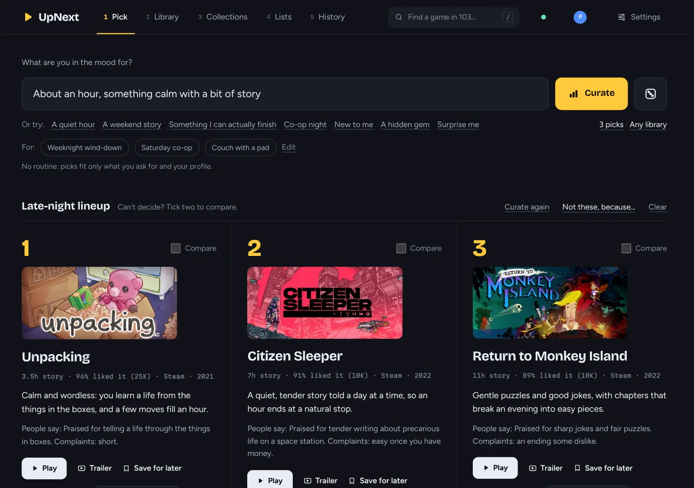
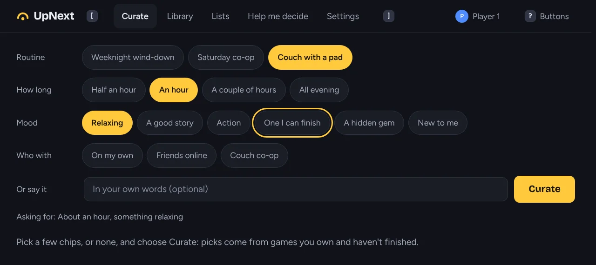
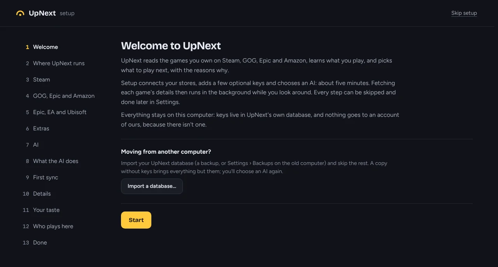

Windows
Windows 10 and 11 · x64 · .msi
An installer that needs no administrator rights. It adds UpNext and UpNext (big screen) to the Start menu. The builds aren't code-signed yet, so SmartScreen asks first: choose More info, then Run anyway.
Finding the right game for the moment can be a struggle. Tell UpNext what you're in the mood for, and it suggests a few games from your own library that fit, with the reasons why.

The Pick page on a made-up library. Cover art belongs to the games' publishers.
How it works
UpNext reads your libraries from Steam, Epic, GOG, Amazon, the EA app and Ubisoft Connect into one list.
Then it looks at each game in detail to see how it fits you.
Ask in your own words, or start from one of these:
1Unpacking3.5h story · 96% liked it · Steam
2A Short Hike1.5h story · 98% liked it · Steam
3Baba Is You12h story · 97% liked it · Steam
Each pick says why it fits. Press Play to start it.

Big screen
Big screen is UpNext with large type and one focus you move with a gamepad, the arrow keys or a TV remote. Use it on a Steam Deck in Gaming Mode, on a Windows handheld, or on the TV in Big Picture.
Add it to your Steam library and start it like any other game.
What's inside

Your AI, or none
The suggestions come from an AI you choose and set up yourself. Without one, UpNext still picks from its own ranking.
Private by design
Everything UpNext knows is kept in a database on your own machine. It has no accounts, no ads and no analytics. This site has no trackers either.
Get UpNext
UpNext runs on Windows, Linux or a home server, and every other device in the house can open it in a browser or the Android app. It's free, with no purchases inside.
Windows 10 and 11 · x64 · .msi
An installer that needs no administrator rights. It adds UpNext and UpNext (big screen) to the Start menu. The builds aren't code-signed yet, so SmartScreen asks first: choose More info, then Run anyway.
.deb · .rpm · x86_64 and arm64
Packages for Debian, Ubuntu and Fedora, and for distributions built on them: Fedora-based ones such as Nobara, and Debian-based ones such as PikaOS. The .rpm should work on openSUSE Tumbleweed too, though it hasn't been tried there or on Nobara and PikaOS yet. Elsewhere, use the release's archive or Flatpak.
PKGBUILD · x86_64 (builds on aarch64)
Each release has a PKGBUILD for upnext-bin and a ready-built package for pacman, for Arch and the distributions built on it, like CachyOS. An AUR package will follow.
AUR: coming later
io.github.zytocc.UpNext · x86_64
For any Linux with Flatpak. Until UpNext is on Flathub, a release can carry it as a single file you install with one command.
flatpak install --user ./upnext-<version>-x86_64.flatpakSteamOS 3 · Flatpak · big screen
Install the Flatpak in Desktop Mode, add UpNext to Steam as a non-Steam game with --big-screen, and it opens with the controller layout in Gaming Mode. A free listing on Steam itself is planned.
ghcr.io/zytocc/upnext · amd64 and arm64
For a home server or a NAS: the server and web UI, without the app window.
git clone https://github.com/zytocc/upnext && cd upnext
docker compose -f contrib/docker/compose.yaml up -d
docker logs upnextAndroid 8 or later · phone, tablet, TV
Use UpNext on your computer from the couch. The app finds your computer on the network, and you allow it once there. Games still start on the computer.
F-Droid: coming later
Any browser · your home network
Turn on Allow other devices in Settings, and a laptop, tablet or phone in the house opens UpNext in its browser. Each one asks once, and you approve it on the computer.
Rust 1.90+ · Node 22.18+
Build it yourself on Linux or Windows. The source is public under the MIT or Apache 2.0 licence, and contributions are welcome.